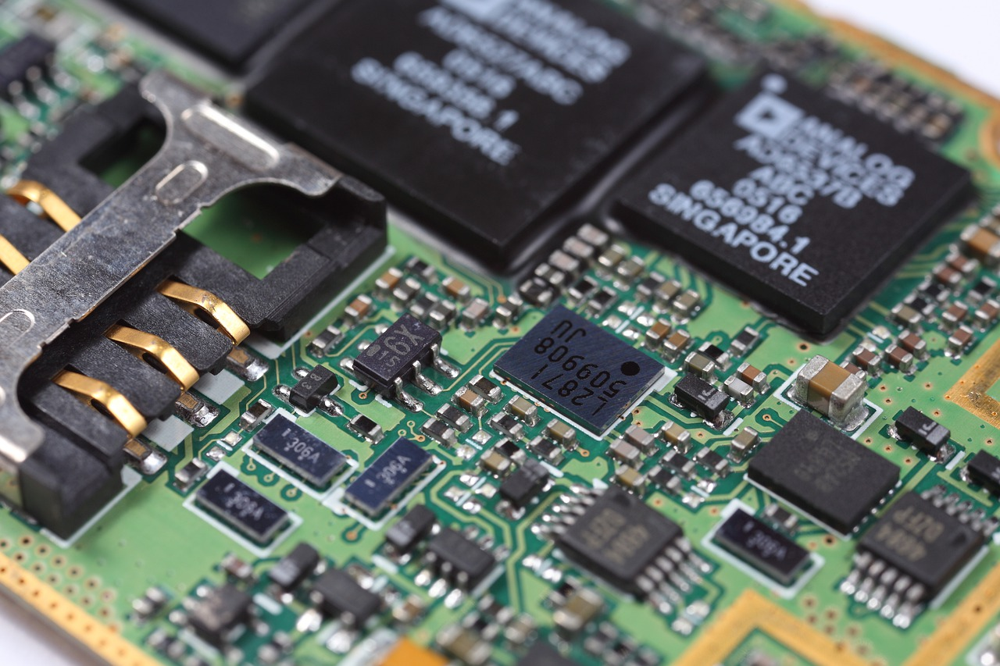
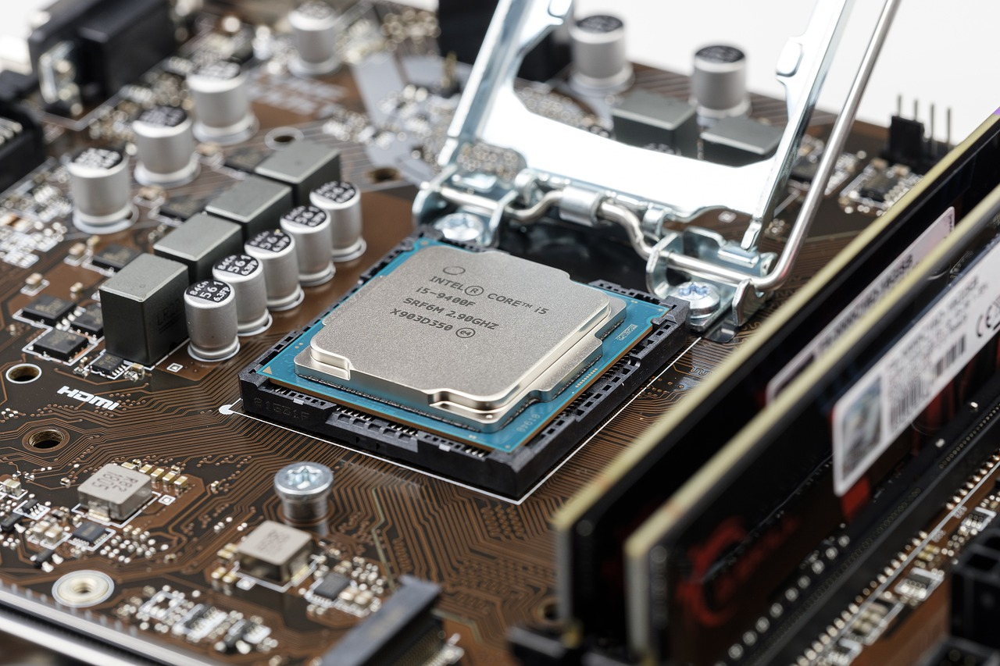
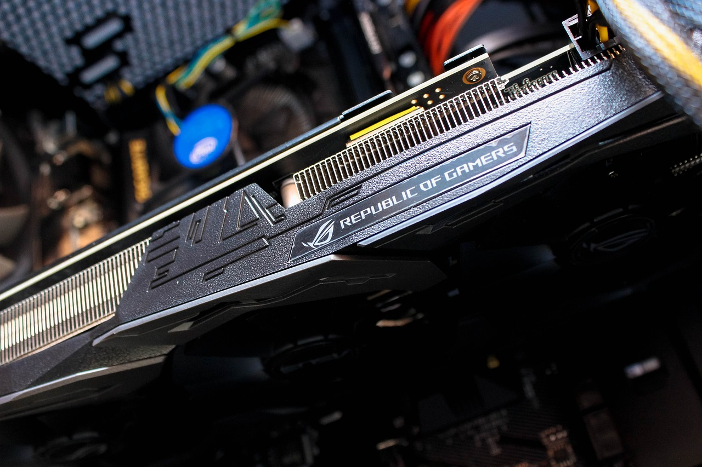
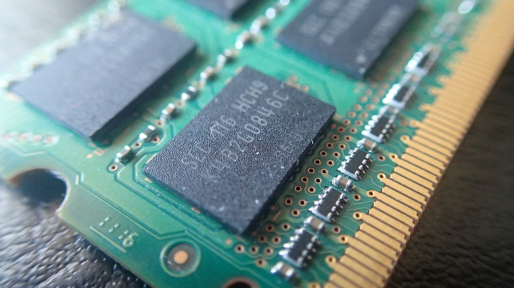
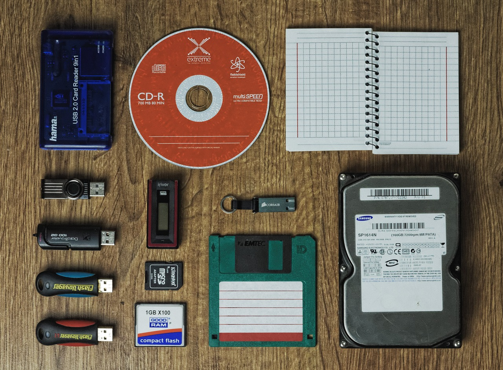

Computer is one the greatest invention of all times.It is an electronic device that manipulates information, or data. A computer has the ability to store, retrieve, and process data. So what is actually inside a computer? Let's find out <3
Computer hardware refers to the physical parts of a computer and related devices. There are 5 significant parts which can absolutely build a strong computer hardware.
The motherboard serves to connect all of the parts of a computer together. The CPU, memory, hard drives, and other ports and expansion cards all connect to the motherboard directly or via cables.
The most important part of your computer, if you had to choose just one, would be the central processing unit. It’s the brain and it processes the instructions that come from programs, the operating system, or other components in your PC.
Computer graphics are an essential part of any modern computer system, even lightweight laptops. “GPU” stands for graphics processing unit, and it’s the part of the PC responsible for the on-screen images you see.
Random-access memory, or RAM, is an essential component in all devices, from PCs to smartphones to game consoles.It’s a high-speed component that temporarily stores all the information a device needs both right now and imminently. Without RAM, doing just about anything on any system would be much, much slower.
Whereas memory refers to the location of short-term data, storage is the component within your computer that allows you to store and access data on a long-term basis. Usually, storage comes in the form of a solid-state drive or a hard drive. Storage houses your applications, operating system and files for an indefinite period. Computers need to write information and read it from the storage system, so the speed of the storage determines how fast your system can boot up, load and access what you’ve saved.
